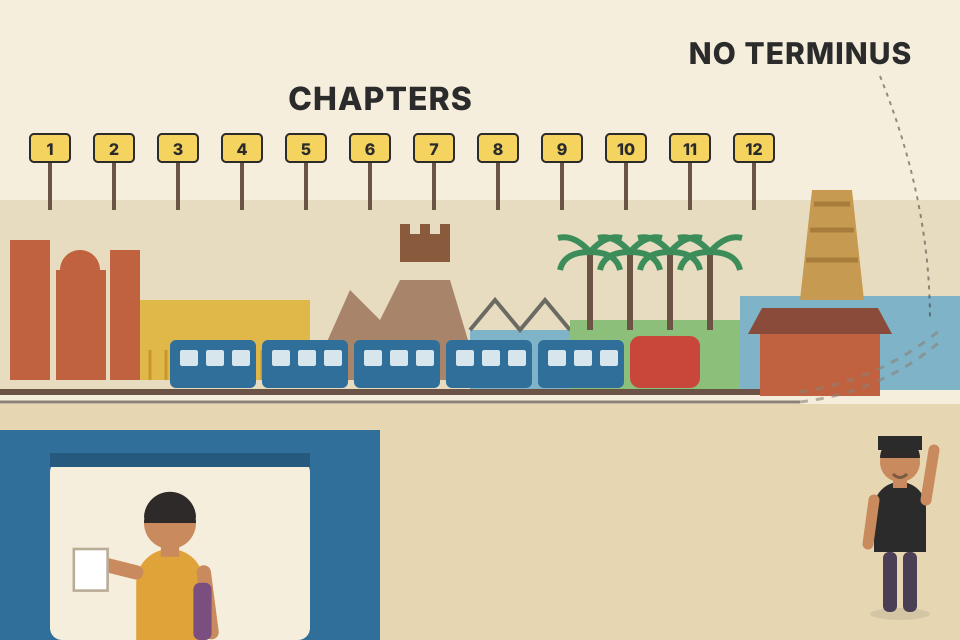
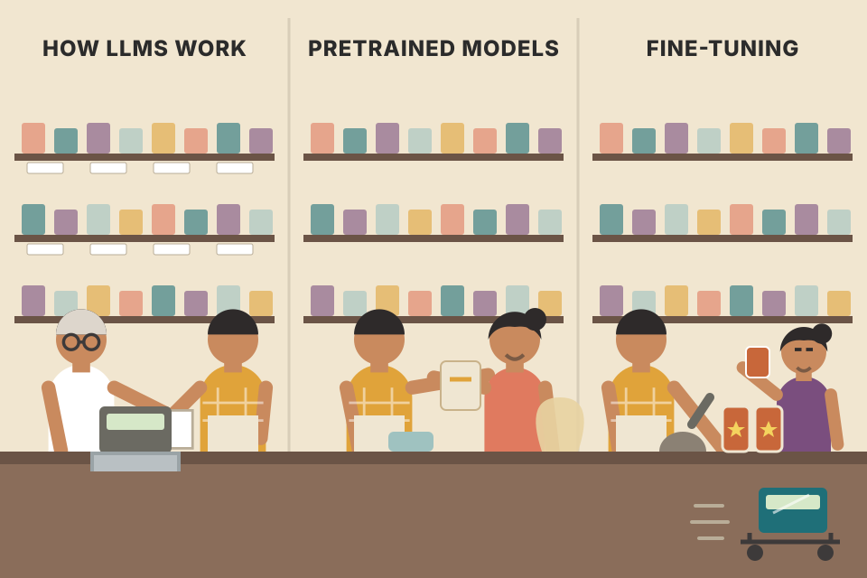
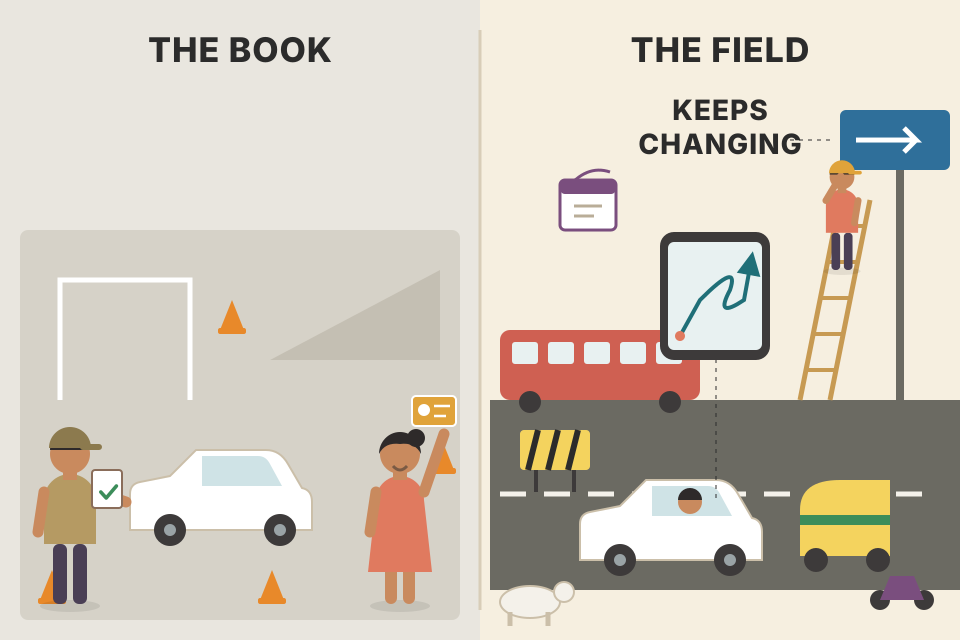
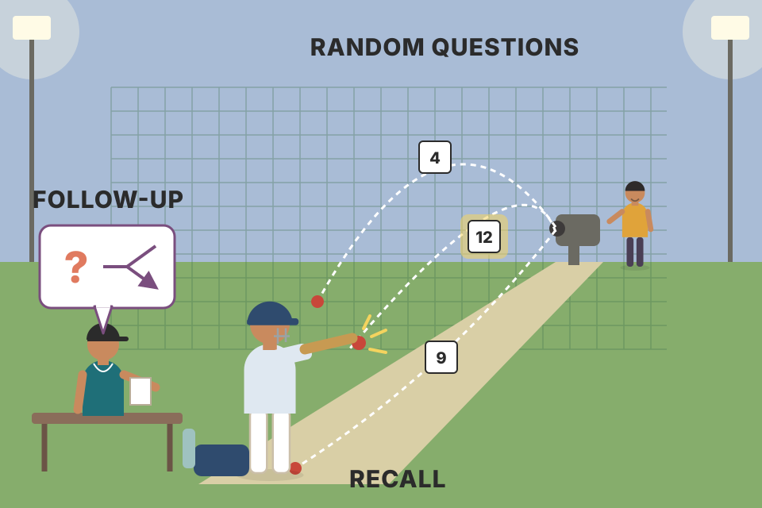

The Afterword is one printed page (pdf p413; p414 is blank). The authors thank the reader and look back: the book showed how LLMs (large language models) work and how to build things with them, from simple chatbots to search engines. It also showed how to fine-tune pretrained models for three kinds of task: classification, generation and language representation (embeddings). Their main message is that this is only the beginning: the field moves fast, so keep following it, and watch the book's GitHub repository, where they keep adding resources. They close with the hope that you can now find your way around LLMs and contribute to the field. Because the Afterword is so short, this page adds a big extra plate (clearly marked as not from the book): how to use the whole book to prepare for interviews, chapter by chapter.
The Afterword has four short paragraphs plus a closing sentence. Read it as a chain: thanks → what you learned → what you can now do → the field keeps moving → keep learning → go contribute. The last two rows are this page's own addition: turning the book into an interview plan.
The Afterword opens by thanking everyone who came along on what the authors call a fascinating journey through the world of large language models. They say they are grateful for your dedication to learning about these powerful models, and they describe LLMs as models that have revolutionized language processing.
That one claim summarises Chapter 1's history plate in a sentence: language AI went from counting words (bag-of-words), to dense embeddings (word2vec), to attention and the Transformer, and then to the large encoder and decoder models (BERT, GPT) that the rest of the book uses. "Revolutionized" means that one general model, pretrained once, can now do many language tasks (classify, summarise, search, chat) that used to need a separate system each.
| Before LLMs (typical) | With LLMs (what the book teaches) | Chapter |
|---|---|---|
| One model per task, trained from scratch on labelled data | One pretrained model, reused via prompting, embeddings or light fine-tuning | Ch.1 |
| Keyword search (match the exact words) | Semantic search (match the meaning) + RAG | Ch.8 |
| Hand-built features for classification | Embeddings + a simple classifier, or zero-shot | Ch.4 |
| Topic models on word counts | Embed → reduce → cluster → label with an LLM (BERTopic) | Ch.5 |
The table is this page's recap of the book, not text from the Afterword.

Finishing a long train journey from Delhi to Chennai. The conductor says thank you at the end, but what matters is what you saw out of the window: every station (chapter) showed a different side of the same country (LLMs). Where it breaks: a train journey ends at the terminus; the Afterword says this field has no terminus.
An afterword is the book's "closing argument". Its job is to remind you of the shape of what you learned, so that the 12 chapters stick as one picture rather than 12 separate facts. That picture is: language → numbers (tokens, embeddings) → a Transformer that predicts the next token → many applications → fine-tuning to specialise.
"What changed with LLMs?" is a common warm-up. A crisp answer: "Before, every language task needed its own model and labelled data. Now one pretrained Transformer can be reused for many tasks by prompting it, using its embeddings, or fine-tuning a small part of it. That moved most of the work from model training to system design: retrieval, prompts, evaluation, latency and cost." That last sentence is exactly where a backend engineer building voice agents or RAG memory fits.
The second paragraph is the recap. Throughout the book, the authors say, we have seen:
Then the payoff: by mastering these techniques, readers can unlock the potential of LLMs and create innovative solutions that use their capabilities. This knowledge, they add, lets you stay ahead of the curve and adapt to new developments in the field. The point is that the book taught foundations (how and why), not just one library's API, so you can understand new models as they arrive.
Step through the three parts. Each step shows which chapters it covers, what you can build after it, and which words of the Afterword it matches.

Learning to run a kirana shop. First you learn what is on the shelves and how the till works (Part I: how LLMs work). Then you serve customers with what is already in stock (Part II: use pretrained models). Finally you start making your own house-brand masala, tuned to your street's taste (Part III: fine-tuning). Where it breaks: a shopkeeper rarely changes the till; in LLM work, the "till" (the base model) gets replaced every few months, which is why the Afterword stresses adapting.
The three fine-tuning kinds are really three different outputs from the same Transformer: a vector for a whole text (representation, Ch.10), a label for a text or each token (classification and NER (named-entity recognition), Ch.11), or new text (generation, Ch.12). Knowing which output you need is the first design decision for any LLM feature.
| Fine-tuning kind (Afterword) | Output | Chapter | Key methods in that chapter |
|---|---|---|---|
| Language representation | one vector per text | Ch.10 | contrastive learning, SBERT (Sentence-BERT), MNR (multiple negatives ranking) loss, Augmented SBERT, TSDAE (Transformer-based Sequential Denoising Auto-Encoder) |
| Classification | a label (per text or per token) | Ch.11 | fine-tune BERT, freezing layers, SetFit, continued pretraining with masked language modelling, NER |
| Generation | new text | Ch.12 | SFT (supervised fine-tuning), LoRA (low-rank adaptation) / QLoRA (quantized LoRA), reward models, PPO (Proximal Policy Optimization), DPO (Direct Preference Optimization) |
"Should we fine-tune or prompt?" A good answer names the output first: "If I need a vector for search, I fine-tune an embedding model. If I need a fixed label at high volume and low latency, a fine-tuned small encoder like BERT or SetFit is cheaper than calling an LLM. If I need generated text in a certain style or format, I try prompting and RAG first and only then SFT with LoRA, because fine-tuning adds a training and evaluation pipeline to maintain."
The third paragraph is the main message. As the book ends, the authors want to stress that our exploration of LLMs is only just the beginning. There are many more exciting developments on the horizon, and they encourage you to keep following the advancements in the field.
To help with that, they ask you to keep an eye on the book's repository, where they continue to add resources. The repository is named in the Preface (Using Code Examples, pdf p18): github.com/HandsOnLLM/Hands-On-Large-Language-Models. The Preface also says all the book's code runs on Google Colab with a free NVIDIA T4 GPU (16 GB of VRAM, the GPU's memory), that 16 GB is the minimum the examples expect, and that the repository lists the minimum GPU needs per chapter.
The book was published in 2024. Some directions that grew afterwards, so you can place them on the book's map (not claims from the book):
| Development | Builds on book chapter |
|---|---|
| Reasoning models trained to "think" before answering | Ch.6 chain-of-thought, Ch.12 preference tuning |
| Much longer context windows | Ch.3 RoPE (rotary positional embeddings), efficient attention, KV cache |
| Tool-calling and agent frameworks, MCP (Model Context Protocol) | Ch.7 agents and ReAct |
| Real-time speech-in, speech-out models | Ch.9 multimodal models |
| Fast serving engines (e.g. vLLM) and aggressive quantization | Ch.3 KV cache, Ch.12 quantization |
Tick what you'd do each week. The counter shows modelled minutes per week (estimates for planning, not from the book).

Getting a driving licence. The test proves you know the rules, but you only become a good driver on real roads, and road rules, cars and Google Maps keep changing. The book is the licence; the repository and the field's news are the roads. Where it breaks: traffic rules change slowly; LLM "rules" (best models, best practice) can change in months.
The book's approach is "intuition first": it teaches mechanisms (attention, embeddings, contrastive learning, LoRA) rather than one vendor's product. Mechanisms change slowly even when models change fast. A new model is usually a known mechanism with a new scale, data mix or training step, so a reader who knows the mechanisms can read a new model card and place it.
"How do you stay current?" is asked in almost every AI-engineer loop. Say something concrete: "I follow a few primary sources, and when something new comes out I map it to a mechanism I know (for example, a new attention variant is a change to the KV cache trade-off). Then I test it on my own evaluation set before adopting it, because leaderboard gains don't always transfer to my task."
The fourth paragraph states the authors' hope: that by reading the book you gained a deeper understanding of how LLMs can be used in various applications, and of how they have the potential to transform industries.
The closing sentence: with this book as your guide, they believe you will be well-equipped to navigate the exciting landscape of LLMs and make meaningful contributions to this rapidly advancing field. The page ends with the printed page number 391; pdf p414 is blank, and the Index starts on pdf p415.
"Contributions" can mean many things: research, open-source code, or building useful products. For a backend engineer, the most direct contribution is building reliable systems around LLMs: the retrieval layer, the prompt and tool layer, evaluation, latency and cost control.
| Kind of contribution (this page's examples) | Book chapters to lean on |
|---|---|
| Ship a RAG feature that cites its sources | Ch.8, Ch.10 |
| Build an agent that uses tools safely | Ch.6, Ch.7 |
| Replace an expensive LLM call with a small fine-tuned classifier | Ch.4, Ch.11 |
| Find themes in user feedback or call transcripts | Ch.5 |
| Release a small instruction-tuned open model | Ch.12 |
UPI did not invent money or bank accounts; it built a fast, reliable layer on top of them, and that layer transformed how India pays. LLMs are the "bank"; most of the industry change will come from people who build the reliable layer on top. Where it breaks: UPI rails are deterministic; LLM outputs are probabilistic, so the layer you build must include evaluation and guardrails.
"Transform industries" happens when a capability becomes cheap and dependable enough to sit inside everyday workflows. The book's Part II and III are exactly the tools for that: make outputs grounded (RAG), structured (output verification, constrained sampling), cheap (small or quantized models, PEFT), and measured (evaluation).
"Tell me about an LLM system you built" is the real version of "make meaningful contributions". Structure the story as the book's pipeline: input → retrieval → prompt/tools → model → output checks → evaluation, and give one number for each of quality, latency and cost. Only describe your own work as it really happened.
The Afterword says to keep learning; this plate turns that into a plan for backend and AI engineer interviews. The book itself says nothing about interviews: the topics below are taken from each chapter's section headings (Table of Contents, pdf p7–12), and the "where it comes up" column is this page's judgement. Use the buttons to light up the chapters that matter most for a given kind of round.
| # | Chapter (pdf pages) | Interview topics it prepares you for | Typical question |
|---|---|---|---|
| 1 | An Introduction to LLMs (p23–58) | History: bag-of-words → word2vec → attention → Transformer; encoder-only (BERT) vs decoder-only (GPT); pretraining vs fine-tuning; proprietary vs open models; responsible use | "When would you use an encoder model instead of a GPT-style model?" |
| 2 | Tokens and Embeddings (p59–94) | Tokenization (word / subword / character / byte), comparing tokenizers, vocabulary size and special tokens, token vs contextual vs text embeddings, word2vec and contrastive training, embeddings for recommendations | "Why is the API priced per token, and why does a model struggle to count letters?" |
| 3 | Looking Inside LLMs (p95–130) | Forward pass and LM head, sampling/decoding, parallel processing and context size, KV (key-value) cache, attention (queries, keys, values, heads), efficient attention (sparse, multi-query, grouped-query, Flash Attention), RoPE | "What is the KV cache, and how does it affect memory and latency?" |
| 4 | Text Classification (p131–158) | Task-specific models, embeddings + classifier, zero-shot via label embeddings, classification with Flan-T5 and ChatGPT, precision / recall / F1, confusion matrix | "You have no labelled data. How do you build a classifier today?" |
| 5 | Clustering and Topic Modeling (p159–188) | Embed → reduce (UMAP (Uniform Manifold Approximation and Projection)) → cluster (HDBSCAN (Hierarchical Density-Based Spatial Clustering of Applications with Noise)) → inspect; BERTopic and c-TF-IDF (class-based TF-IDF); representation blocks (KeyBERTInspired, maximal marginal relevance, LLM-generated labels) | "How would you find the main complaint themes in a million support tickets?" |
| 6 | Prompt Engineering (p189–220) | Temperature and top_p, prompt ingredients, in-context (few-shot) learning, chain prompting, chain-of-thought, self-consistency, tree-of-thought, output verification, grammar / constrained sampling | "How do you get reliable JSON out of an LLM?" |
| 7 | Advanced Text Generation Techniques and Tools (p221–246) | Quantized GGUF (a file format for quantized models) models in LangChain, prompt templates and chains, conversation memory (buffer, windowed, summary), agents and ReAct | "How do you give a chatbot memory without overflowing the context window?" |
| 8 | Semantic Search and RAG (p247–280) | Dense retrieval and chunking, nearest-neighbour search and vector databases, reranking with cross-encoders, MAP (mean average precision), grounded generation, query rewriting / multi-query / multi-hop / routing / agentic RAG, RAG evaluation (faithfulness, citation recall) | "Design a RAG system over company documents. How do you know it works?" |
| 9 | Multimodal LLMs (p281–308) | Vision Transformer (ViT), CLIP (Contrastive Language-Image Pre-training) and OpenCLIP shared text-image embeddings, BLIP-2 and its Q-Former bridge, captioning, image chat | "How would you build text-to-image search?" |
| 10 | Creating Text Embedding Models (p309–344) | Contrastive learning, SBERT bi-encoders, MTEB (Massive Text Embedding Benchmark) evaluation, losses (softmax, cosine similarity, MNR), hard negatives, Augmented SBERT, TSDAE and domain adaptation | "Retrieval quality is poor on our domain. How would you improve the embedding model?" |
| 11 | Fine-Tuning Representation Models for Classification (p345–376) | Fine-tuning BERT, freezing layers, SetFit few-shot, continued pretraining with masked language modelling, NER and token-label alignment | "You have 32 labelled examples. What do you do?" |
| 12 | Fine-Tuning Generation Models (p377–412) | Pretraining → SFT → preference tuning; full fine-tuning vs PEFT; LoRA and QLoRA; evaluation (perplexity, BLEU, ROUGE, BERTScore, benchmarks, leaderboards, LLM-as-a-judge, human eval); reward models, PPO, DPO | "Explain LoRA. Why is DPO simpler than RLHF with PPO?" |
A suggested order for someone who already builds LLM features. Hours are modelled planning numbers, not from the book. Step through it.
Preparing for an IRCTC Tatkal booking. You don't read the whole railway rulebook at 9:59; you know in advance which train, which class and which payment route. The table is your "which train": for each round type, the 3–5 chapters that matter most. Where it breaks: Tatkal rewards speed; interviews reward depth on the topics you pick, so pick fewer and know them well.
Interviews for AI-adjacent backend roles usually test three layers: fundamentals (Ch.1–3: can you explain tokens, attention, the KV cache?), building blocks (Ch.4–9: can you choose between prompting, embeddings, RAG, agents?) and adaptation (Ch.10–12: do you know when fine-tuning pays off and how it is done cheaply?). System-design rounds mix all three with backend concerns: latency, throughput, caching, cost, failure modes.
When a question is vague ("design a support assistant"), use the book's order as your checklist out loud: "First, data and chunking for retrieval (Ch.8). Then the embedding model, and whether it needs domain fine-tuning (Ch.10). Then prompt design and output checks (Ch.6), memory and tools (Ch.7). Then serving: model size, quantization and KV cache limits (Ch.3, Ch.12). Finally evaluation: retrieval metrics and faithfulness (Ch.8, Ch.12)."
Press New question, answer out loud in 60 seconds, then reveal a model answer. Answers use the book's ideas; each one names the chapter to re-read if you got stuck.

Net practice before a cricket match: the bowler sends random deliveries so you can't pre-plan the shot. Random questions train the same thing: recalling the right chapter on demand. Where it breaks: in a real interview the "bowler" adjusts to your answers with follow-ups, so practise saying "it depends on…" and naming the trade-off.
Retrieval practice (testing yourself) and mixing topics in random order both help memory more than re-reading in order. That is a general learning finding, not a claim from this book.
Good answers have a shape: definition in one line → mechanism → trade-off → when you'd use it. The model answers follow that shape so you can copy it.
The Afterword has no summary section of its own; in plain words, it says:
| Term | Meaning | Where in the book |
|---|---|---|
| LLM (large language model) | A large Transformer model trained on lots of text that represents or generates language. | Ch.1 |
| Pretrained model | A model already trained on general data, reused for new tasks. | Ch.1 |
| Fine-tuning | Further training a pretrained model on task-specific data. | Ch.10–12 |
| Classification | Assigning a label to a text (or to each token, as in NER). | Ch.4, Ch.11 |
| Generation | Producing new text, one token at a time. | Ch.6, Ch.12 |
| Language representation | Turning text into vectors (embeddings) that capture meaning. | Ch.2, Ch.10 |
| Chatbot | A generative model in a conversation loop, often with memory. | Ch.7 |
| Search engine (semantic) | Finds documents by meaning using embeddings; combined with generation it becomes RAG. | Ch.8 |
| Book repository | github.com/HandsOnLLM/Hands-On-Large-Language-Models: code, requirements, extra tutorials. | Preface (pdf p18) |
The Afterword names no tools. Since it looks back on the whole book, here are the main tools, models and companies used across the chapters (from the book's index), and what each does.
| Name | What it does in the book | Chapter |
|---|---|---|
Hugging Face transformers | Downloads and runs the models (e.g. Phi-3-mini, 3.8 billion parameters, the book's main generative model) | 1, 2, 3, 6 |
| OpenAI, Cohere, Anthropic Claude | Proprietary models used through APIs (ChatGPT for classification; Cohere for embeddings, reranking and grounded generation) | 1, 4, 8 |
sentence-transformers | Text embedding models (e.g. all-MiniLM-L6-v2, all-mpnet-base-v2), training with contrastive losses | 2, 4, 5, 8, 9, 10 |
| UMAP, HDBSCAN, BERTopic | Reduce embedding dimensions, cluster them, and build topic models | 5 |
| LangChain, llama-cpp-python, GGUF | Chains, memory and ReAct agents around a quantized local model | 7 |
| FAISS, Annoy, Pinecone, Weaviate | Nearest-neighbour search libraries and vector databases for dense retrieval | 8 |
| Ragas | Automated RAG evaluation (faithfulness, answer relevance) | 8 |
| CLIP, OpenCLIP, BLIP-2 | Shared text-image embeddings; making a text model see images | 9 |
| MTEB | Benchmark for comparing embedding models | 10 |
| SetFit | Few-shot classification by fine-tuning a sentence-transformer | 11 |
peft, bitsandbytes, TinyLlama | LoRA adapters, 4-bit quantization (QLoRA), and the small model fine-tuned in the book | 12 |
| Open LLM Leaderboard, Chatbot Arena, MMLU | Ways to compare generative models: leaderboards, human votes, benchmarks | 12 |
| Google Colab (T4, 16 GB VRAM) | Where all the book's code runs | Preface |
Serving engines such as vLLM, agent protocols such as MCP, and newer open model families appeared or grew after the book; the mechanisms they rely on (KV cache, quantization, tool-calling agents) are the ones the book teaches.
Classification (Ch.11), generation (Ch.12) and language representation (Ch.10, text embedding models).
"From simple chatbots to more complex systems like search engines" (Part II: prompting, chains and agents through semantic search and RAG).
Keep following advancements in the field, because this is only the beginning; and watch the book's repository (github.com/HandsOnLLM/Hands-On-Large-Language-Models), where they keep adding resources.
Each new token would recompute keys and values for the whole history, so generation gets slower as the conversation grows. The cache trades GPU memory for speed (Ch.3).
Likely a small encoder: embeddings + classifier or a fine-tuned BERT/SetFit model. Cheaper, faster and more predictable at that volume. Use an LLM to bootstrap labels or for zero-shot if there is no labelled data (Ch.4, Ch.11).
Retrieval: are the right chunks returned? Measure retrieval (e.g. MAP), add a reranker, fix chunking, try query rewriting. Then check faithfulness: does the answer stick to the context, with citations (Ch.8)?
The model sees tokens (often whole subwords), not letters, so letter-level facts aren't directly visible (Ch.2).
A bi-encoder embeds query and document separately (fast, pre-computable: first-stage retrieval). A cross-encoder reads both together and scores the pair (slower, more accurate: reranking the top results) (Ch.8, Ch.10).
Freeze the pretrained weights and learn a small low-rank update (two thin matrices) for selected layers. You train a tiny fraction of the parameters and can merge the update back into the weights afterwards; QLoRA does this on a 4-bit-quantized base model to save memory (Ch.12).
PPO needs a separately trained reward model and a reinforcement-learning loop. DPO uses the preference pairs (chosen vs rejected) directly in a supervised-style loss, with no reward model to train (Ch.12).
Windowed conversation buffer (keep only the last k turns) or conversation summary (an LLM keeps a running summary). The full buffer is simplest but grows without limit (Ch.7).
Give examples of the format, verify and retry, or use grammar-constrained sampling so only valid tokens can be produced (Ch.6, output verification).
Tools and models change quickly; mechanisms (attention, embeddings, contrastive learning, LoRA) change slowly. Knowing them lets you understand and evaluate new models as they appear.
The Afterword has no references or footnotes. The only resource it points to is the book's repository, whose address is given in the Preface (pdf p18): github.com/HandsOnLLM/Hands-On-Large-Language-Models.